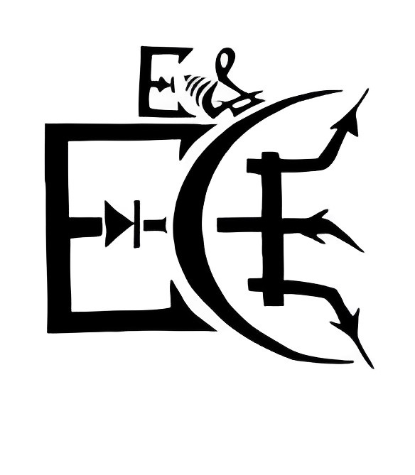

Saptashwa
Saptashwa
Saptashwa
Saptashwa
I am Saptashwa Bhattacharjee, a senior undergraduate student in the
Department of Electronics and Electrical Communication Engineering at the Indian Institute
of Technology (IIT) Kharagpur. |
 |
|
I served as the Secretary of the Electronics and Electrical Communication Engineering Department Society in the academic year 2022-2023. In my tenure, I worked with co-members of the society in initiating a blog series - Corepedia, which aims at guiding students through core internship and placement preparation. I also acted as the first point of contact in addressing concerns of nearly a 1000 students of the department. |  |